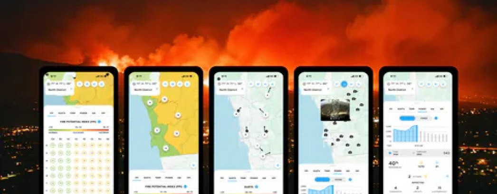
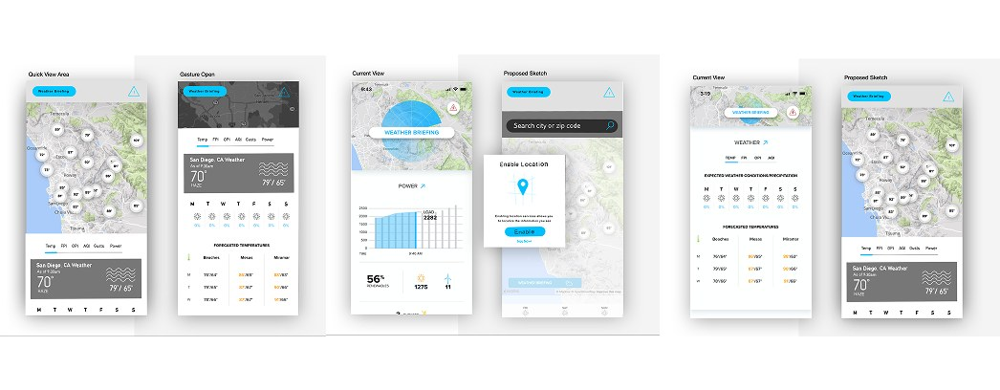

Case study · Utility & wildfire risk
Seeing risk
before it becomes
reality.
I designed a weather intelligence platform to help SDG&E make faster, safer decisions in one of the most wildfire-prone regions in the United States, turning thousands of data points into a tool teams could read at a glance.

The opportunity
Read conditions. Surface risk. Decide faster.
Weather as operational risk
For a utility responsible for critical infrastructure, changing conditions aren’t a forecast. Wind, heat, humidity, and dry vegetation are operational risk, shaping where crews deploy, what equipment gets watched, and when to act.
Clarity at a glance
The challenge wasn’t displaying weather data. It was transforming thousands of data points into a decision-making tool field teams, meteorologists, and operations leaders could understand instantly.
Lower the risk
The goal was clear: improve situational awareness and ultimately help reduce wildfire risk across the region.
The research
I learned how weather was actually used before I designed a single screen.
I ran in-depth interviews with the internal meteorology team to understand how they interpreted models, monitored changing conditions, and identified areas of concern. What I was really after was which information truly influenced operational decisions, and which metrics were simply background noise.
I also interviewed the field workers responsible for maintaining infrastructure across the region. Those conversations were just as valuable.
- Crews needed information quickly, often outdoors under shifting conditions
- They weren’t looking for complicated dashboards or scientific reports
- They needed to know where conditions were changing
- Where risk was increasing, and what required attention right now
Designing for action
Designed for action, not observation.
Rather than building another weather application, I designed an operational intelligence platform. A single interface brought environmental indicators together so users could read both current conditions and emerging risk, instead of forcing people to assemble the picture from multiple systems.
Environmental monitoring produces enormous amounts of data; good design determines what deserves attention first. I organized information into clear visual hierarchies, paired live conditions with operational indicators on interactive maps, and let critical information surface immediately while supporting detail stayed available when needed.

Outcomes
What it delivered.
Intelligence built around decisions
A unified experience combining weather data, wildfire indicators, and environmental conditions into a single operational platform.
Research-driven strategy
Interviews with meteorologists and field workers directly informed the product architecture, reflecting real operational workflows instead of assumptions.
Faster situational awareness
Fire potential, wind conditions, humidity, and other critical indicators became immediately visible, so teams could read changing conditions more quickly.
Supporting wildfire mitigation
The platform contributed to the organization’s broader wildfire-prevention strategy by improving visibility into the environmental conditions that drive operational risk across the region.